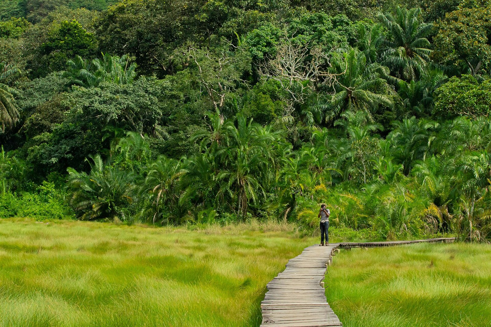
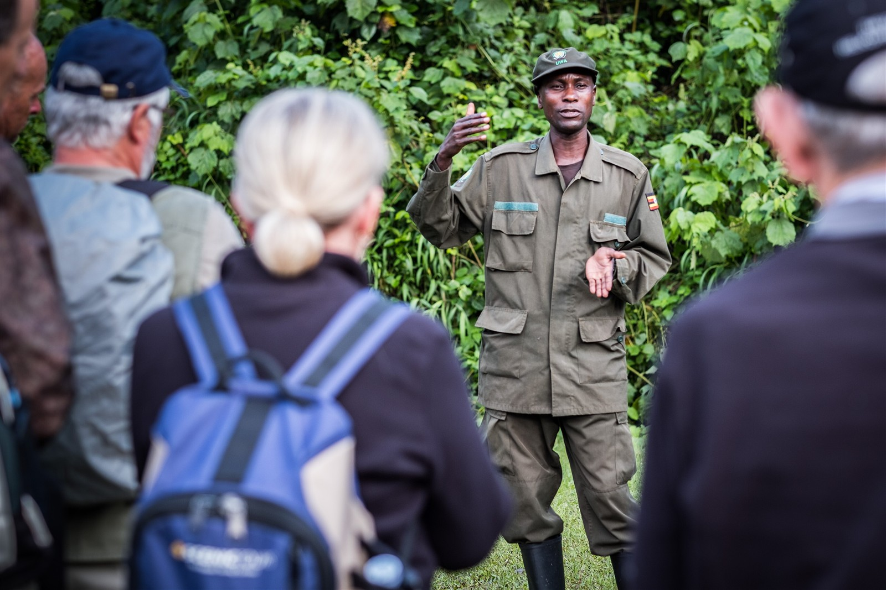

UGANDA / RHINO HISTORYA RETURN.
A RETURN.
A NEW
CHAPTER.
Follow the story from disappearance to reintroduction—and the questions that remain.
Enter the rhino story ↗
A name can remain.
A living world cannot be replaced.
A habitat holds a community.
Its future reaches beyond one species.

Water, vegetation and shelter. Begin with the conditions that make a community possible.
Explore the wetland community ↗Habitat loss and fragmentation.
Poaching and illegal wildlife trade.
Climate change, pollution and invasive species.
Follow the story from disappearance to reintroduction—and the questions that remain.
Enter the rhino story ↗

